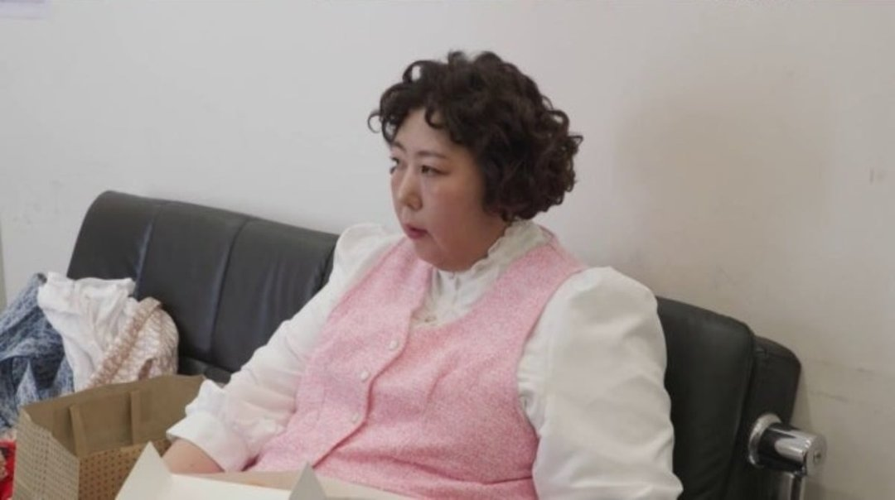
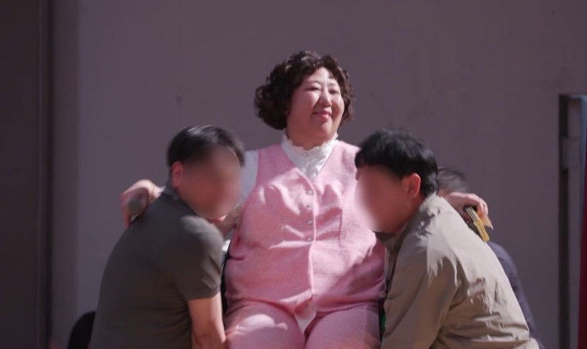
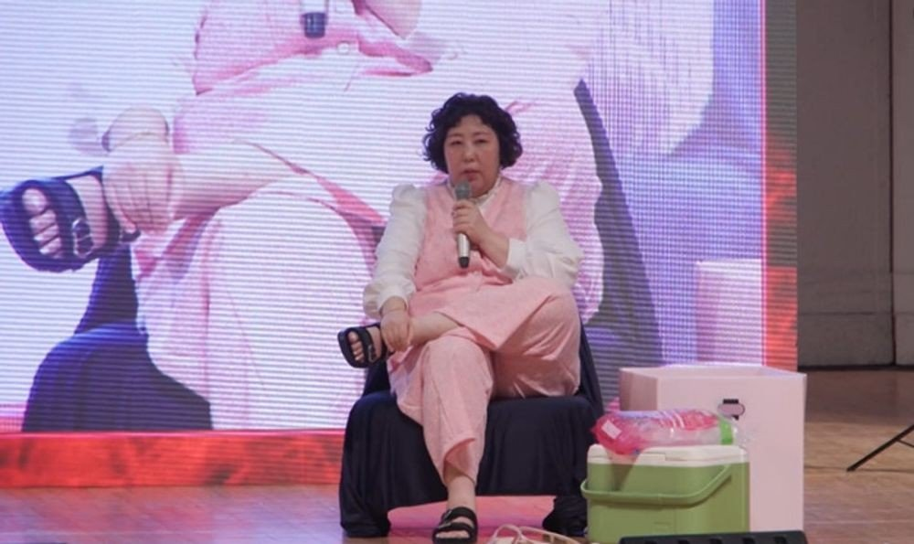
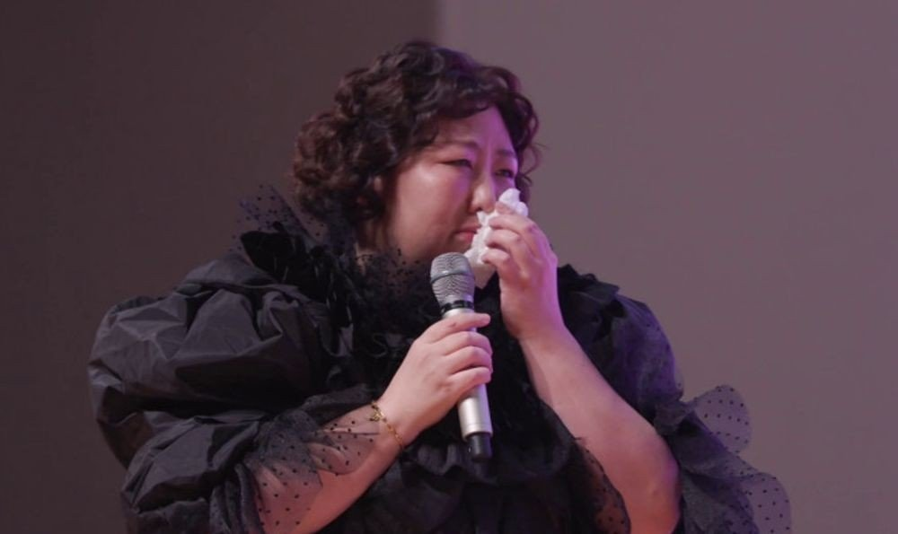

"올해 한 번도 행복한 적이 없었는데." 신기루가 첫 팬미팅 무대 끝에서 꺼낸 말이에요. 7일 MBC '전지적 참견 시점' 423회는 그 팬미팅 '노콘쇼'의 하루를 아침부터 무대 위까지 따라갔어요. 방송에 나온 순서대로 장면을 묶고, 장면마다 어느 공식 클립으로 다시 볼 수 있는지 붙였어요.
📷 사진 1 자리
▲ MBC '전지적 참견 시점' 속 첫 팬미팅 날의 신기루 · 사진=MBC '전지적 참견 시점 제공
1,000석, 그리고 18년
'노콘쇼'는 1,000석 규모로 열린 신기루의 첫 팬미팅이에요. 데뷔 21주년에 처음 연 자리였어요.
MBC가 올린 선공개 클립 제목에는 '18년의 무명 시절 끝에 마침내 이룬 오랜 꿈'이라는 설명이 붙어 있어요. 21년 중 18년이 무명이었다는 숫자를 옆에 두면, 첫 팬미팅을 '오랜 꿈'이라고 부른 게 과장으로 들리지 않아요.
▶ 영상 1 자리
아침엔 삼겹살, 대기실엔 도넛
방송은 무대보다 긴장한 신기루를 먼저 보여 줬어요. 아침부터 냉동 삼겹살로 속을 채웠고, 공식 클립 제목대로라면 4인분을 시켰어요. 대기실에서도 도넛과 빵을 손에서 놓지 않았고요.
▶ 영상 2 자리
대기실에는 응원군이 찾아왔어요. 홍윤화·김민기 부부, 홍현희·제이쓴 부부, 송은이, 이용진, 풍자까지. 홍현희가 대기실에 들른 장면은 별도 클립으로 나와 있어요.
▶ 영상 3 자리
의자째 들려 나온 오프닝, 마지막 노래는 '내가 만약'
'노콘쇼'의 시작은 걸어 나오는 입장이 아니었어요. 신기루는 의자에 앉은 채 스태프들 손에 들려 무대로 나왔어요.
📷 사진 2 자리
▲ '노콘쇼' 오프닝, 의자에 앉은 채 들려 입장하는 신기루 · 사진=MBC ‘전지적 참견 시점’ 제공
공연이 끝나 갈 무렵에는 노래를 불렀어요. 고른 곡은 윤복희의 '내가 만약'이었어요.
📷 사진 3 자리
▲ 첫 팬미팅 무대에서 마이크를 든 신기루 · 사진=MBC ‘전지적 참견 시점’ 제공
눈물이 터진 건 노래 다음
노래 뒤에는 팬들이 준비한 깜짝 슬로건 이벤트가 이어졌어요. 신기루는 여기서 참던 눈물을 쏟았어요. "올해 한 번도 행복한 적이 없었는데, 오늘 '나는 행복한 사람이구나' 느끼게 해주셔서 너무 감사하다"는 말과 함께였어요.
📷 사진 4 자리
▲ 팬미팅 무대에서 눈물을 닦는 신기루 · 사진=MBC ‘전지적 참견 시점’ 제공
이 회차에는 오랜 팬이 나타나 신기루가 울컥하는 장면도 있어요. MBC가 이 장면을 따로 클립으로 올려 두었어요.
▶ 영상 4 자리
클립 4편을 나란히 놓고 보니 그중 2편이 무대에 오르기 전 장면이었어요. 삼겹살과 대기실 손님처럼 무대 밖 시간이 이 회차의 절반을 채운 셈이에요. 방송을 못 봤다면 선공개 클립으로 시작해 오랜 팬이 나오는 클립으로 끝내는 순서를 권해요.
✍️ 직접 보거나 들은 경험이 있으면 위 문단에 한두 줄 덧붙이세요 (이 안내 줄은 지우기)
신기루의 첫 팬미팅 장면은 7일 방송된 '전지적 참견 시점' 423회와 MBCentertainment 유튜브 공식 클립 4편으로 볼 수 있어요. 다음 주 '전참시'는 토요일 밤 MBC에서 젠더프리 아이돌 XLOV의 일상과 이영자의 '식재료 원정대'로 이어져요.



